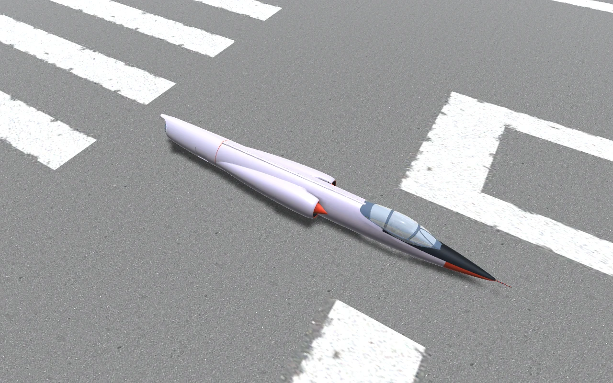
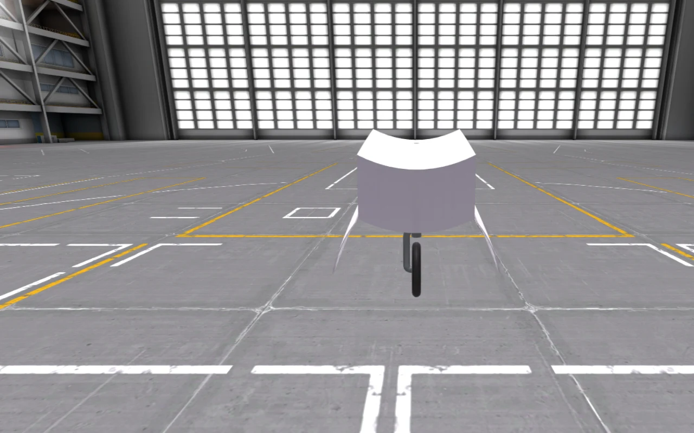
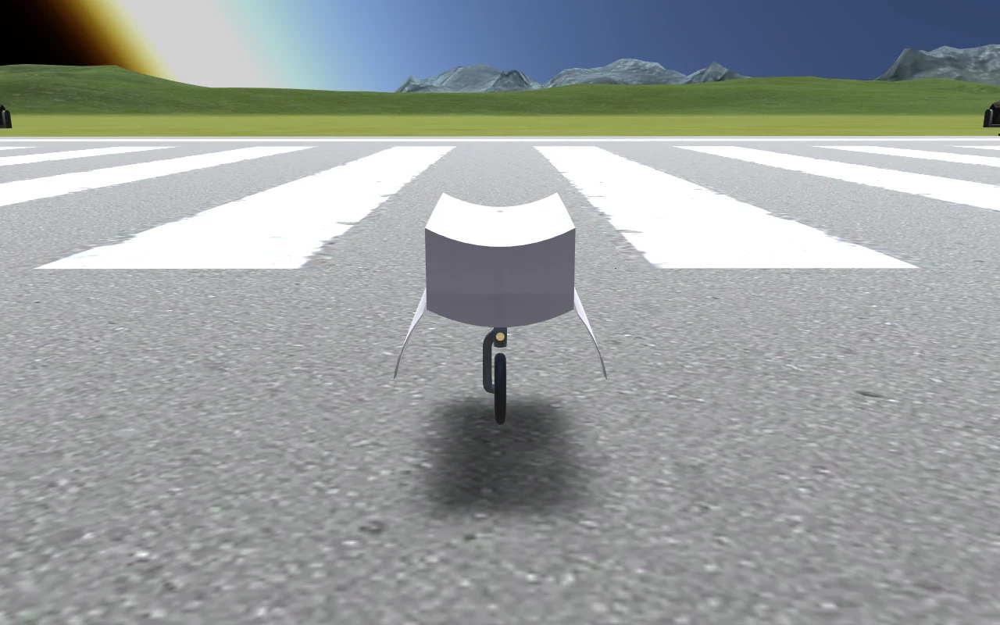

ShineFix home
← Back to supported mods
ColdJ's Military Planes F-104 Starfighter
Optics verified
Human tested
Version 1.0.1
Compatibility evidence
Original screenshot gallery
Parts
F-104

F104 Front Gear

